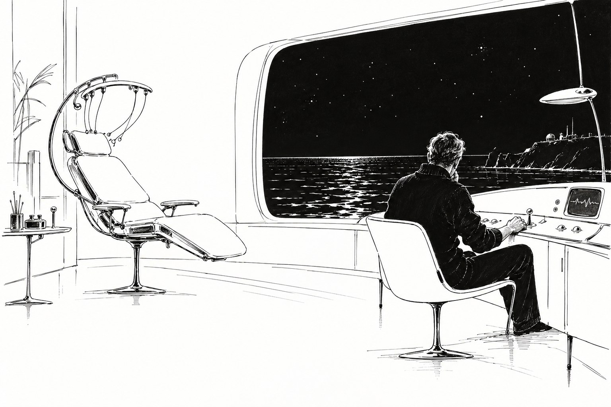

Ментоскоп

Глава первая.
Она пришла без записи, в четверг, под вечер, когда Ветлугин уже отпустил ассистентку и сидел один, разбирая чужие ментограммы за неделю. Постучала, приоткрыла дверь и спросила, можно ли, таким тоном, каким спрашивают люди, давно решившие, что можно.
— Можно, — сказал Ветлугин. — Только я уже никого не принимаю. Если вам срочно, вызовите дежурного.
— Мне не срочно, — сказала она. — Я жду уже полгода. Подожду ещё полчаса, если вам надо закончить.
Он посмотрел на неё внимательнее. Женщина лет сорока, высокая, загорелая особым, не земным загаром, какой бывает у людей, подолгу живущих под чужими звёздами, с коротко остриженными светлыми волосами и с очень прямой спиной. На левой руке от запястья до локтя шёл свежий розовый шрам, аккуратный, хорошо залеченный.
— Садитесь, — сказал Ветлугин. — Я закончу потом.
Её звали Ирина Ауэрбах. Экзобиолог, восемь лет на дальних станциях, последние три года на Каменной. Ветлугин знал Каменную понаслышке: суровая, сухая планета, бедная жизнью и богатая пещерами, в которых этой бедной жизни и было больше всего. Полгода назад в одной из этих пещер случился обвал.
— Нас было двое, — сказала она. — Я и Тарас Ремез, геолог. Мы спустились на третий ярус, там были колонии, которые я давно хотела посмотреть. Потом пошёл свод. Я помню, как пошёл свод. Я помню звук, его не спутаешь ни с чем, такой длинный сухой треск, как будто рвут очень толстую ткань. Я помню, как Тарас толкнул меня к стене. А дальше я помню свет. Фонари спасателей, и кто-то говорит: «Тихо, тихо, всё, всё». Между этим девять часов. Мне так сказали. Девять часов и сорок минут.
— И этих девяти часов вы не помните.
— Совсем. Ни минуты.
— Это бывает, — сказал Ветлугин. — После сильного удара, после долгой нехватки воздуха, после страха. Особенно после страха. Мозг иногда очень бережно обходится со своим хозяином. Он решает, что хозяину этого помнить не нужно, и не помнит.
— Я знаю, — сказала она. — Мне это говорили. Три врача. Очень хорошие, очень добрые. Все трое сказали, что это защитная реакция и что лучше не трогать.
— А вы хотите тронуть.
Она помолчала, глядя в окно. За окном было море, вечернее, тихое, сизое, с розовой полосой у горизонта.
— Мне снится голос, — сказала она. — Почти каждую ночь, уже полгода. Темно, и кто-то говорит. Тихо, совсем рядом. Мужской голос. Я не разбираю слов, только интонацию. Он что-то объясняет. Долго, терпеливо, будто боится, что я не пойму. И я просыпаюсь с чувством, что мне сказали что-то очень важное, а я это потеряла. Знаете, как бывает, когда держишь в руке что-то и разжимаешь пальцы во сне, а утром рука пустая.
— Это мог быть Ремез.
— Конечно, это был Ремез. Больше там никого не было. — Она повернулась к нему. — Я спрашивала его. Он говорит, что я всё время была без сознания и что он со мной не разговаривал, потому что некому было отвечать. Он говорит, что сам почти ничего не помнит, что сидел и ждал.
— Вы ему не верите?
— Я ему верю, — сказала она медленно. — Он очень хороший человек. Он мне жизнь спас, если на то пошло, он меня тогда к стене толкнул, а сам остался под краем. Я ему верю во всём. Кроме этого.
Ветлугин ничего не сказал. Он ждал. Он давно знал, что самое главное пациенты говорят не тогда, когда их спрашивают, а когда им дают помолчать.
— Я хочу полную ментограмму, — сказала Ирина. — Эти девять часов. Если они там есть, я хочу их обратно. Это моё. Мне сказали, что вы лучший, кто это делает, и что вы не станете отговаривать.
— Отговаривать стану, — сказал Ветлугин. — Это моя обязанность. Но если вы не передумаете, отказать не смогу. Это ваша память и ваше решение.
— Не передумаю.
— Тогда через три дня. В понедельник, с утра. Мне нужно посмотреть ваши медицинские записи с Каменной.
Она кивнула, встала и протянула ему руку, сухую и крепкую.
— Спасибо, — сказала она. — Вы первый, кто не сказал «лучше не трогать».
⁂
Медицинские записи пришли вечером того же дня, и Ветлугин читал их долго, до глубокой ночи, с чашкой остывшего чаю у локтя.
Сначала всё было так, как он ожидал. Перелом левого предплечья, ссадины, обезвоживание, нехватка кислорода, умеренная, не опасная. Сотрясения не было. Он перечитал это место дважды. Сотрясения не было, ушиба головы не было, ни одного признака того, что мозг пострадал от удара. Тогда он открыл первую ментограмму, которую сняли с неё на станции ещё до отправки на Землю: короткую, контрольную, такую снимают всем после серьёзных происшествий.
Провал на ней был виден хорошо. Он и не мог быть не виден: девять часов пустоты среди плотной, живой ткани воспоминаний. Но Ветлугина поразили не сами девять часов, а их края.
Он видел за свою жизнь сотни провалов. После ушибов, после наркоза, после лихорадки, после страха. Края у них всегда бывали рваные, неровные, размытые, как берег, подмытый водой: память истончалась постепенно, сначала пропадали детали, потом звуки, потом целые куски, и так же постепенно возвращалась. Здесь краёв не было. Здесь был разрез. Сухой треск свода, толчок к стене, и сразу пустота. Пустота, и сразу свет фонарей. Как будто кто-то взял очень острый нож и вырезал из ленты ровно девять часов сорок минут, ни секундой больше, ни секундой меньше.
Такие провалы он тоже видел. Несколько раз за всю жизнь. Не после ушибов и не после страха.
Так забывают не потому, что мозг решил за хозяина. Так забывают, когда хозяин решил сам.
Ветлугин закрыл ментограмму, допил холодный чай и долго сидел в темноте, слушая море. Потом подвинул к себе терминал и запросил полный отчёт спасательной группы с Каменной.
Глава вторая.
Отчёт спасателей был короткий и сухой, как все отчёты, написанные людьми, которые девять часов копали камень и не знали, кого откопают. Время вызова, состав группы, схема прохода, два неудачных сверления, третье удачное. В самом конце два коротких абзаца о пострадавших.
«Ремез Т. в сознании, ориентирован, перелом двух рёбер, ушибы. По его словам, Ауэрбах И. всё время находилась без сознания». И ниже, другим почерком, как будто дописано потом: «Ауэрбах И. при извлечении в сознании. Спросила, который час. После ответа потеряла сознание, в себя пришла через сорок минут в транспорте, происшедшего не помнит». Подпись: фельдшер группы Макаренко.
Ветлугин перечитал эти две строчки несколько раз. Человек, девять часов пролежавший без сознания, приходя в себя, спрашивает, где он, что случилось, жив ли товарищ. Он не спрашивает, который час. Который час спрашивает тот, кто все эти девять часов считал время и очень хочет знать, сколько его прошло.
Он нашёл в каталоге Ремеза. Тот был на Земле, в отпуске после лечения, жил в какой-то деревне под Вологдой. Ветлугин долго сидел над кнопкой вызова, а потом решил не звонить, а написать. Он написал коротко: что Ирина Ауэрбах обратилась к нему за ментоскопией, что запись назначена на понедельник и что ему, врачу, хотелось бы задать свидетелю несколько вопросов, если свидетель не против.
Ремез не ответил. В субботу утром он приехал сам.
⁂
Это был человек лет пятидесяти с лишним, невысокий, плотный, с большими спокойными руками и тем обветренным лицом, которое на Земле сразу выдаёт человека издалека. Он сел в кресло для посетителей, стараясь не смотреть на другое кресло, откинутое, с обручем над изголовьем, и положил руки на колени.
— Вы мне писали, — сказал он. — Я решил, что лучше приехать.
— Спасибо. Я не ожидал.
— Я тоже не ожидал, — сказал Ремез и немного помолчал. — Спрашивайте.
— В отчёте спасателей стоит, что Ирина всё время была без сознания. Это стоит с ваших слов.
— Да.
— А фельдшер записал, что, когда вас откопали, она была в сознании и спросила, который час.
Ремез не ответил. Он смотрел на свои руки.
— Макаренко, — сказал он наконец. — Хороший парень. Аккуратный. Я его просил не записывать, а он всё равно записал. Потому что так было. Я его за это уважаю.
— Значит, она была в сознании.
— Была. Почти всё время. Первые полчаса нет, потом да. Мы разговаривали. Много разговаривали. Там, знаете, больше нечего было делать. Фонарь сел на третий час, воздуха было мало, по нашим расчётам его должно было хватить часов на десять. Спасатели пришли через девять сорок. Так что вы понимаете, о чём мы думали.
— Понимаю. О чём вы говорили?
Ремез поднял глаза. Взгляд у него был очень спокойный и очень усталый.
— Вот этого я вам не скажу, — сказал он. — И вот за этим я и приехал. Доктор, не смотрите туда. Я вас прошу.
— Это её память, — сказал Ветлугин. — Не моя и не ваша. Она взрослый человек и дала согласие. Я не вправе ей отказать.
— Её память, — согласился Ремез. — А в ней моё. Я не знаю, как это у вас, у врачей, называется. Там есть то, что я сказал. Я это сказал, потому что думал, что мы не выберемся. Я это отдал ей. Ей, понимаете? Не вам, не вашему прибору и не ей сегодняшней. Ей тогдашней. В темноте.
— Это тот же человек.
— Вы так думаете? — спросил Ремез без всякой иронии, с интересом, как геолог спрашивает о породе. — А я вот не уверен. Я полгода смотрю на неё и не уверен.
Он поднялся. Вставал он осторожно, придерживая бок, и Ветлугин автоматически отметил про себя, что рёбра у него срослись не совсем хорошо.
— Уговаривать её я не стану, — сказал он. — Я пытался. Не прямо, но пытался. Стало только хуже. А вас прошу ещё раз. Если вы там что-то увидите, что касается не её, а меня, подумайте, прежде чем отдавать.
Он кивнул и вышел. Ветлугин слышал в коридоре его неровные шаги, потом хлопнула входная дверь, потом всё стихло.
Он долго сидел, глядя на пустое кресло с обручем. Правило о согласии писали умные люди, и оно было хорошее: твоя память принадлежит тебе, и никто, кроме тебя, не может в неё входить. Об этом правиле Ветлугин читал лекции студентам. И ни разу за двадцать лет ему не пришло в голову спросить, что делать, если в твоей памяти лежит чужая.
В понедельник в девять утра Ирина Ауэрбах постучалась в его дверь.
Глава третья.
Запись заняла два часа. Ирина лежала в кресле ментоскопа с обручем на голове, дышала ровно и глубоко, как спят очень уставшие люди. Перед тем как уснуть, она спросила, будет ли она что-нибудь чувствовать, и Ветлугин сказал, что нет, что это как сон без сновидений. Она улыбнулась и сказала: «Вот и хорошо. А то мне в последнее время сны не нравятся».
По порядку, который Ветлугин сам когда-то помогал писать, первый просмотр ментограммы делал врач, один. Это было разумное правило. Память не киноплёнка, в ней бывает такое, что человеку нельзя показывать сразу, без подготовки, и кто-то должен решить, как и в каком порядке. До сих пор это правило ни разу не казалось ему властью. Оно казалось ему обязанностью, вроде той, чтобы проверить температуру воды, прежде чем сажать в неё ребёнка.
Он перенёс запись в соседнюю комнату, где стоял пульт для просмотра, плотно закрыл дверь и сел. За окном было море, утреннее, яркое, с мелкими белыми барашками. Он опустил штору.
Девять часов сорок минут были там. Он это знал заранее, и всё равно на секунду у него сжалось сердце, когда на шкале прибора на месте контрольной пустоты показалась плотная, живая, нетронутая ткань. Она ничего не потеряла. Она всё спрятала.
Он включил начало.
Темнота. Не полная: сбоку тусклое пятно налобного фонаря, лежащего стеклом вниз. Тяжёлое дыхание, своё и чужое. Боль в левой руке, острая, затмевающая всё остальное. Стук мелких камешков, которые ещё осыпаются где-то над головой. Мужской голос, тот самый, тихий, совсем рядом: «Ира. Ира, ты меня слышишь? Не двигай рукой. Слышишь? Не двигай».
Ветлугин слушал. Дальше были часы, самые обыкновенные часы двух людей в каменном мешке. Они считали воздух. Они спорили, сколько идти спасателям от станции. Ремез рассказывал про третий ярус, про то, как лежит пласт, и Ирина слабым голосом спорила с ним про свои колонии. Они даже смеялись дважды, и Ветлугин слушал этот смех в темноте и думал, что человечество всё-таки не зря прожило свои две тысячи лет. В начале третьего часа фонарь мигнул и погас. Стало совсем темно. Разговор стал тише и реже.
На шестом часу Ремез сказал:
«Ира. Я должен тебе сказать одну вещь. Я никому этого не говорил. Я думал, что никогда не скажу. Но теперь, кажется, уже неважно, и...»
Ветлугин остановил запись.
Он сделал это раньше, чем успел подумать, тем же движением, каким отдёргивают руку от горячего. В комнате стало очень тихо. За стеной ровно и глубоко дышала спящая женщина, которая не знала, что у неё в голове.
Итак, Ремез не врал. Там было его. Что-то, что человек нес в себе долго, может быть, всю жизнь, и выложил в темноте, думая, что темнота никогда не кончится. Ветлугин не знал, что это. И очень твёрдо, как давно ничего не решал, решил, что не узнает.
Но что-то делать было надо. И надо было понять, почему края провала такие ровные.
Он перемотал запись вперёд, через весь шестой час, седьмой, восьмой, не включая звука и не глядя на кривые, только на счётчик времени, как мотают чужое письмо, отворачиваясь. Остановился за двадцать минут до конца. Включил.
Темнота. Дыхание, частое, мелкое, как бывает, когда воздуха уже мало. И далёкий, едва слышный, но совершенно отчётливый звук сверла где-то в толще камня.
«Тарас, — сказал женский голос. — Тарас, ты слышишь? Это они».
«Слышу».
Пауза. Долгая. Сверло стало чуть ближе.
«Тарас. Если выберемся, я забуду. Слышишь? Я забуду всё, что ты сказал. Ничего этого не было. Я тебе обещаю».
Тишина. Потом тихий, старый, очень усталый мужской голос:
«Ты не сможешь».
«Смогу, — сказала она. — Вот увидишь».
И через двадцать минут, ровно в тот миг, когда в темноту ворвался свет фонарей и кто-то сказал «тихо, тихо, всё», Ветлугин услышал её вопрос о том, который час. И понял, зачем она спросила. Она запоминала минуту. Минуту, с которой надо начинать забывать.
Он выключил пульт и долго сидел, глядя на опущенную штору.
Теперь у него в руках были две вещи сразу, и ни одна из них ему не принадлежала. Чужая тайна, которую один человек отдал другому в темноте и не собирался отдавать никому больше. И обещание, которое она дала и сдержала так честно, что спрятала его даже от самой себя. Не случайность, не защитная реакция, не бережность мозга. Решение.
И полгода после этого решения женщина пришла к нему и сказала: «Это моё. Верните».
За стеной скрипнуло кресло. Ирина проснулась. Он слышал, как она снимает обруч и как ставит ноги на пол. Потом её голос, всё ещё сонный:
— Доктор? Ну что там?
Глава четвёртая.
Она сидела на краю кресла, сутулясь, с отпечатком обруча на лбу и растрёпанными волосами, и впервые за всё время выглядела на свои сорок. Ветлугин сел напротив, на круглый табурет, чтобы глаза были на одном уровне.
— Всё там, — сказал он. — Девять часов сорок минут. Ничего не потеряно.
Она выдохнула и на секунду закрыла глаза.
— Я знала, — сказала она. — Я знала. Давайте.
— Сначала я должен вам кое-что сказать, — сказал Ветлугин. — Вы его не потеряли. Вы его забыли. Это разные вещи, Ирина. У вас не было ушиба. У вас не было защитной реакции, про которую вам говорили мои коллеги. Вы забыли это сами. Нарочно.
Она смотрела на него и, кажется, не понимала.
— Так не бывает.
— Бывает. Редко, но бывает. У людей с очень сильной волей. И только тогда, когда они очень не хотят нарушить слово.
Он встал, принёс из соседней комнаты маленький проигрыватель и поставил его на подлокотник кресла. На проигрывателе было две минуты. Он вырезал их сам, пока она просыпалась: от «Тарас, ты слышишь? Это они» до «Вот увидишь». Ни слова раньше.
— Это из самого конца, — сказал он. — За двадцать минут до того, как вас откопали. Я хочу, чтобы вы послушали это первым. Потом, если захотите, получите всё. Это ваше право, и я его не отнимаю.
Он включил.
Она слушала, не шевелясь. На словах «Я тебе обещаю» она вздрогнула, будто услышала своё имя в толпе. На словах «Ты не сможешь» закрыла лицо руками. Когда её собственный голос, слабый, сиплый, упрямый, сказал «Вот увидишь», она сидела так же, согнувшись, с лицом в ладонях, и Ветлугин не видел, плачет она или нет.
Запись кончилась. В комнате стало слышно море.
Она долго молчала. Потом опустила руки. Глаза у неё были сухие и очень ясные.
— Это я, — сказала она. — Это я ему пообещала.
— Да.
— И сдержала.
— Сдержали. Лучше, чем кто-либо из тех, кого я знаю.
Она кивнула, медленно, несколько раз, как человек, который соглашается не с собеседником, а с чем-то внутри себя.
— А вы слышали? — вдруг спросила она. — То, что он сказал. Вы это слышали?
— Нет, — сказал Ветлугин. — Я дослушал до слов «я должен тебе сказать» и выключил. Это не мне было сказано.
Она посмотрела на него так, будто видела впервые.
— И не хотелось?
— Очень хотелось, — честно сказал Ветлугин.
Она помолчала ещё. Потом сказала спокойно, деловито, как говорила, наверное, на станции про пробы и колонии:
— Сотрите. Всё. И эти две минуты тоже.
— Вы уверены? Вы сами сказали, что это ваше.
— Уверена, — сказала она. — Я однажды уже решила. Та я, в темноте, знала, что делает, лучше меня нынешней. Она всё слышала. А я только сплю плохо. Это пройдёт. Вы же врач, скажите мне, что это пройдёт.
— Это пройдёт, — сказал Ветлугин. И добавил, потому что это была правда: — Теперь, наверное, пройдёт.
Он стёр запись при ней. Сначала две минуты на проигрывателе, потом всю ментограмму на большом пульте. На экране показалась строчка о том, что запись уничтожена по требованию пациента, и она сама нажала кнопку подтверждения.
У двери она остановилась.
— Если будете говорить с Тарасом, — сказала она, — скажите ему... — Она подумала. — Нет. Ничего не говорите. Он и так поймёт, когда мы встретимся. Ведь он сказал, что я не смогу.
И ушла, и дверь за ней закрылась тихо, без стука.
⁂
Вечером Ветлугин спустился к морю. Он делал это редко, хотя жил в трёх минутах ходьбы, и каждый раз удивлялся, почему так редко. Был штиль. Вода накатывалась на гальку и отходила с долгим тихим шорохом.
Он думал о том, что сегодня впервые за двадцать лет решил за пациента, что ему слышать сначала, а что потом. Что правило этого не запрещало, но и не предусматривало. Что оправдание у него было одно: он вернул ей не память, а решение, её собственное, и она приняла его во второй раз. И что никто никогда не сможет проверить, так ли это и не обманывает ли он себя.
Теперь на свете было три человека, которые знали, что в той темноте что-то было сказано. И только один из них знал что.
От берега по воде шла лунная дорожка, и по ней, не торопясь, плыл чей-то надувной мяч, забытый днём на пляже. Ветлугин посмотрел, как он уходит в темноту, подумал, что завтра его вынесет на соседний пляж, и там его найдут другие дети, и пошёл домой.